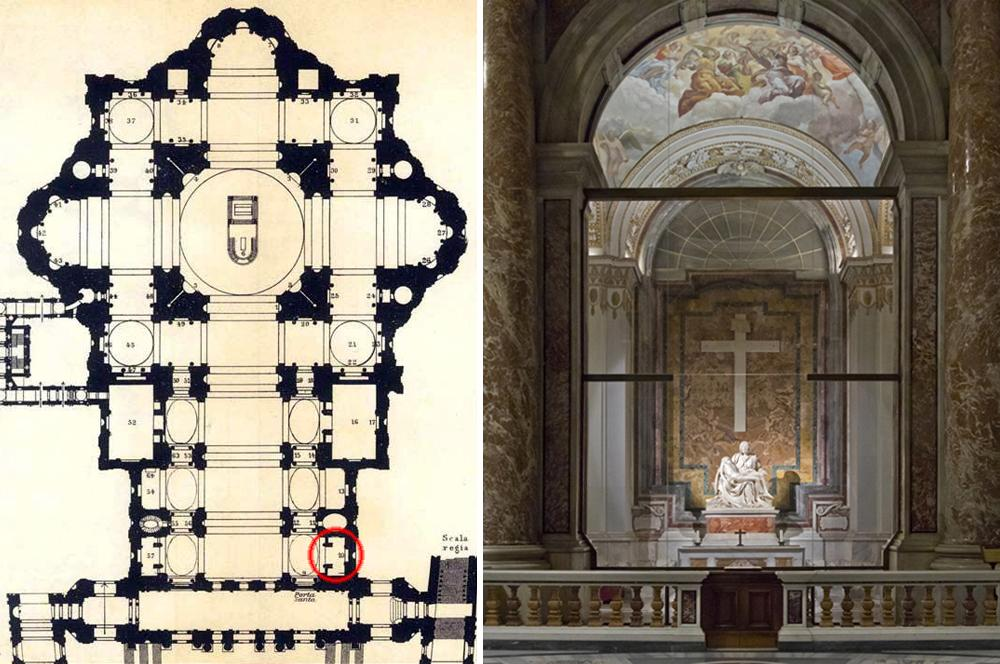

La scultura si trova precisamente nella prima cappella sulla destra entrando nella basilica, ed è oggi protetta da una lastra di vetro antiproiettile che la separa dai visitatori. Questa protezione è stata installata dopo un grave episodio avvenuto nel 1972, quando un uomo colpì l'opera con un martello, danneggiando in particolare il volto della Vergine. Grazie a un lungo e accurato restauro, la Pietà è stata riparata, ma da allora viene custodita con particolare attenzione per garantirne la conservazione.
La Pietà raffigura la Vergine Maria che tiene tra le braccia il corpo senza vita di Cristo appena deposto dalla croce. A differenza delle rappresentazioni precedenti dello stesso tema, spesso caratterizzate da un forte pathos e da espressioni di dolore intenso, Michelangelo sceglie una via completamente diversa: Maria appare serena, composta. Il suo volto non è segnato dalla disperazione, ma da una consapevolezza profonda e quasi trascendente del sacrificio del figlio.
Uno degli aspetti più sorprendenti dell'opera è proprio la giovinezza della Vergine. Michelangelo non la rappresenta come una madre anziana, ma come una figura giovane e idealizzata. Questa scelta riflette un concetto tipicamente rinascimentale, secondo cui la bellezza esteriore è manifestazione della purezza interiore. Maria diventa così simbolo di perfezione spirituale e non semplice figura storica.
Dal punto di vista compositivo, la Pietà è costruita secondo una struttura piramidale, che conferisce stabilità ed equilibrio. Il corpo di Cristo è adagiato sulle ginocchia della madre in modo naturale, ma studiato con grande attenzione per ottenere armonia visiva. Le proporzioni non sono del tutto realistiche: Maria è volutamente più grande del normale per poter sostenere il corpo del figlio senza creare dissonanze visive.
Straordinario è anche il trattamento del marmo. Michelangelo riesce a trasformare la pietra in materia viva: la pelle di Cristo appare morbida e levigata, mentre le pieghe del mantello di Maria sono profonde e dinamiche. Questo contrasto tra la delicatezza del corpo e la solidità delle vesti esalta l'intensità emotiva dell'opera.
La Pietà non è solo una rappresentazione della morte, ma un'immagine di grande profondità spirituale. Il gesto della mano aperta di Maria sembra offrire il corpo di Cristo allo spettatore, invitandolo a riflettere sul significato del sacrificio e della redenzione. In questo senso, l'opera diventa simbolo di meditazione sul dolore, sulla fede e sulla speranza.
Tra le curiosità più interessanti, va ricordato che questa è l'unica opera firmata da Michelangelo: la firma si trova sulla fascia che attraversa il petto della Vergine.
“MICHAELANGELUS BONAROTUS FLORENTINUS FACIEBAT”
(“Michelangelo Buonarroti fiorentino lo fece”)
Secondo la tradizione, la incise dopo aver sentito attribuire l'opera ad altri artisti.
Inoltre, la scultura è stata realizzata a partire da un unico blocco di marmo di Carrara, scelto personalmente dall'artista.
Ancora oggi, la Pietà continua a suscitare meraviglia e commozione, confermandosi come un capolavoro senza tempo, capace di unire tecnica, bellezza e profondità espressiva in modo unico e irripetibile.
